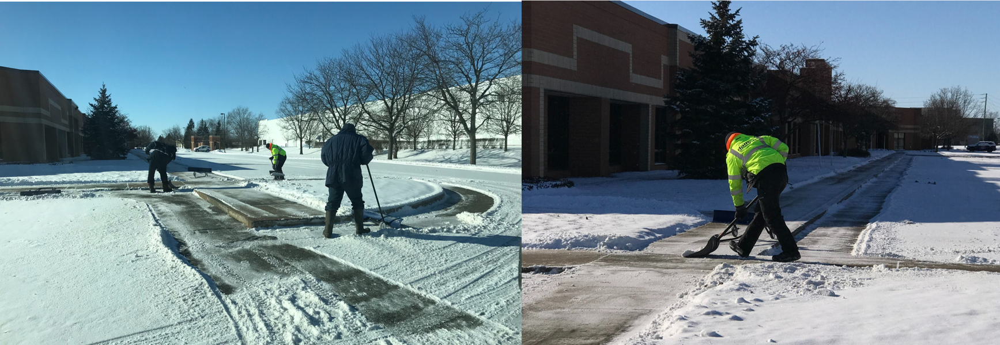

technology-based snow removal
we use our technological platform, Contractor Foreman, to drive efficiency and enhance communication with our network of providers and customers, with a strong focus on customer service excellence. All information related to location, work order history, schedules, site visits, and pricing is stored here. This becomes part of the site record and plan for each location, contributing to decision-making about future activities on the site with an exceptional emphasis on customer satisfaction. All our snow removal partners use Contractor Foreman's mobile technology in the field to take photos and verify their work, ensuring top-quality service. All information is stored at the site level, allowing us to access detailed historical data to make informed decisions from year to year, always with a commitment to providing exceptional service to our customers.
